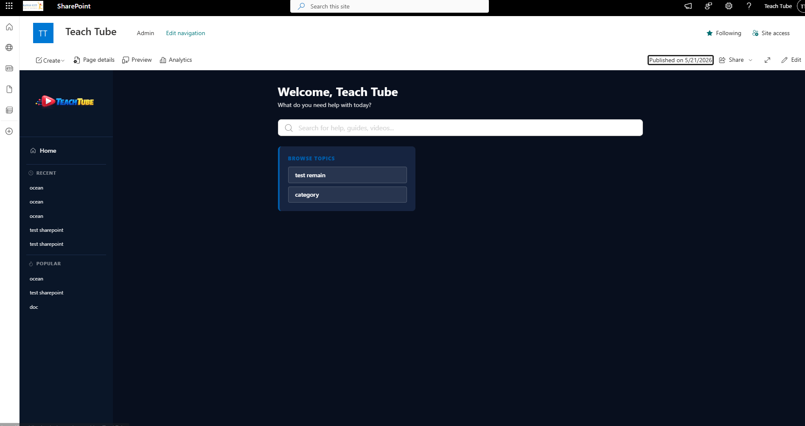
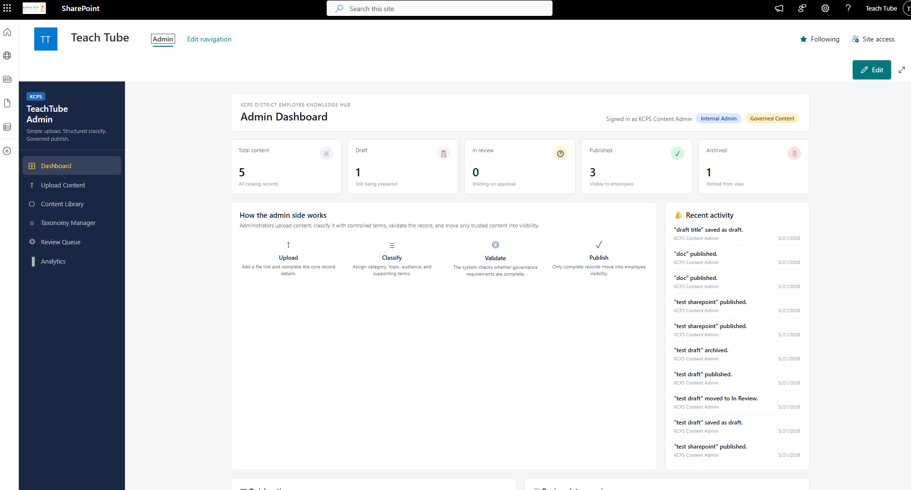
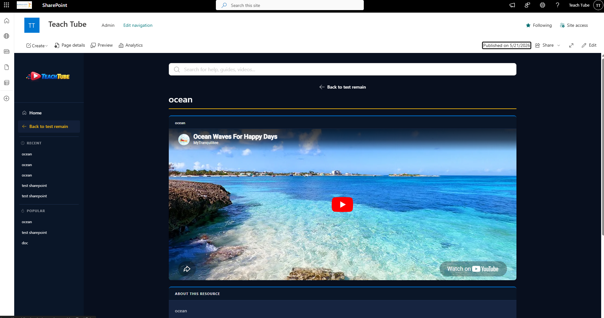

ELIJAH MILLARD
DEVELOPER - KANSAS CITYSome people find their calling chasing what's new. I found mine in what endures.
I'm Eli - a self-directed developer completing the i.c.stars technology internship in Kansas City. My path here wasn't traditional. I was homeschooled, with a father who's a software engineer and the sense to let me build a curriculum around what actually fascinated me: systems, constraints, and the satisfaction of making something work that wasn't supposed to.
That started with an Arduboy - a handheld console you program in C. Scarce documentation, tight hardware limits, a language pushed well past its comfort zone. Getting a game running on it felt like cracking a code that wasn't meant to be cracked. I got hooked on that feeling. It led me to COBOL - not because it's trendy, but because legacy systems have that same character. Deep constraints, decades of embedded logic, and a shortage of people who can actually read them. I'm currently pursuing COBOL certification alongside AWS Cloud Architect, because understanding where these systems are going matters as much as knowing where they've been.
Outside the terminal, I'm an Eagle Scout with Troop 391, a three-year scout camp staffer, a bonsai grower, and someone who thinks a well-ordered space reflects a well-ordered mind.
A SharePoint-based employee knowledge hub built for Kansas City Public Schools, now live and serving 2,100+ district staff across 33 schools. I built the initial version as a capstone project at i.c.stars, presented it at the showcase, and was brought on as a W2 contractor by Tricom IT Consulting to take it to production. I was the sole technical lead -- architecture, frontend, service layer, deployment, documentation, and client communication. No senior dev to escalate to.



The hardest part wasn't the code -- it was the environment. Dataverse normalizes custom column names to lowercase in OData responses, silently. It stores Choice columns as integers, not strings. Published is 126880002. Video is 126880000. Every read and write ran through lookup maps in both directions, and when one was wrong the app either crashed or saved garbage data without telling you.
The worst single bug was contentType.toLowerCase is not a function -- a raw integer slipping through the data pipeline into render logic that expected a string. It was happening in minified production code with no line context. I had to reason backwards through the entire pipeline to find it.
The tenant storage entity problem was its own chapter. The app reads its Dataverse URL from a SharePoint tenant property at startup -- the right architectural call. But KCPS didn't have a tenant-wide App Catalog configured. PowerShell commands kept returning Unknown Error or Access Denied. The resolution was that their team set the storage entity at a non-standard path, and I updated the fetch to point there. Once both pieces were in place it connected immediately.
WHAT I LEARNEDReal client environments are not clean. They have constraints made years ago by people who are no longer there. I learned to separate what I can fix from what I have to work around. Some problems needed better code. Some needed someone with the right permissions to run two PowerShell commands. All I could do was make that ask as clear and actionable as possible and wait.
The handoff matters as much as the build. I wrote three Word documents -- a staff user guide, an admin user guide, and a full technical reference for the IT team -- plus a developer README. If I handed over a zip file and walked away, TeachTube would have stopped working the first time something needed to change. The documentation is what makes the thing last.
WHAT I'D DO DIFFERENTLYDesign the Dataverse schema more carefully upfront -- I extended column lengths mid-deployment because SharePoint URLs exceeded the default 100-character limit. Start the permissions conversation in week one. And push harder earlier for a clear go/no-go on the AI policy -- I built the Cohere semantic reranking integration and made it toggleable, which was the right call, but I invested time in a feature that was always going to be disabled.
A fully functional core banking system built in ILE COBOL, running live on PUB400 under library ELIJAHM1. Customer management, account management, transaction processing, batch end-of-day processing, statement generation, and a CL menu system that ties it all together. Built the way the industry actually builds it.
The environment came before the code. Weeks of setup -- creating a PUB400 account, installing IBM Access Client Solutions, learning to navigate a 5250 green screen that hasn't changed since the 1980s. The first real milestone was understanding what a library was versus a source file versus a member. That sounds trivial. It wasn't.
The editor fought back. SEU, the built-in IBM i source editor, is not like any modern tool. The Enter key doesn't work the way any modern keyboard expects. Adding a line means typing I in the line number column. The first program -- Rock Paper Scissors, not the banking system -- took far longer to type than it should have because the tool itself was the obstacle.
The biggest time sink was encoding. VS Code saves in UTF-8. IBM i's COBOL compiler expects EBCDIC. The quote character in each is a different binary value. So every string literal -- every DISPLAY statement, every IF comparison -- came back with Delimiter for literal is not correct errors across the entire file. The compiler was rejecting clean-looking code because of invisible character differences that looked identical on screen. Solving it required understanding CCSID -- coded character set identifiers -- a concept that simply doesn't exist in modern development.
THE TECHNICAL DECISIONSChose ILE COBOL over OPM COBOL because ILE is the modern standard and what employers actually use. Chose CL for the menu system rather than COBOL because CL is purpose-built for job automation and chaining programs on IBM i -- using COBOL there would have been the wrong tool. Chose packed decimal (COMP-3) for all financial data because floating point arithmetic loses pennies. Banks have lost real money to floating point errors. COBOL was designed for the specific problem of handling money accurately at scale, and it still does that better than most alternatives.
WHAT CLICKEDThe first time RPSGAME compiled and ran. Not because Rock Paper Scissors is impressive but because it meant the entire chain worked -- VS Code to IFS to member to compiler to executable -- and the green screen was waiting for input from a real program running on a real IBM i 7.5 system. That was proof of concept for everything that followed.
The second was understanding what COMP-3 actually does and why. That's not an academic concept. The moment it clicked it was clear why COBOL still exists -- not nostalgia, but because it solves a real problem better than the alternatives.
WHAT I'D DO DIFFERENTLYWrite everything in SEU first, directly on the system, before touching VS Code. The encoding problem only existed because of the Windows-to-IBM-i file transfer. SEU produces correctly encoded members by default. The modern tooling workflow is better long term, but not when you're learning the platform and debugging compilation errors at the same time.
Available for a live demo on IBM i. Contact me and I will walk you through it.
Built from scratch -- no frameworks, no libraries, no build tools. The constraint was intentional. A portfolio about legacy systems and doing more with less should practice what it preaches.
The visual design references the 1895 to 1905 era of silent cinema -- specifically the nitrate film stock of the Lumiere Brothers and Edison Manufacturing Company. Film grain runs on a canvas element at 24fps using randomized monochromatic pixel noise. Vertical scratch lines appear on roughly 30% of frames. Flash cuts between sections reference the mechanical snap of a ViewMaster slide advance. The countdown leader renders each number with randomized position jitter and brightness flicker to simulate unstable projection. Monospace typography throughout references telegram and film stamp aesthetics.
The intro sequence, the navigation system, the grain, the transitions -- all of it is vanilla JS and CSS, chained together with setTimeout and requestAnimationFrame.
[ VIEW ON GITHUB ]Elijah Millard
TECHNOLOGY INTERN - KANSAS CITYi.c.stars Technology Intern - Building a client-facing content hub for Kansas City Public Schools, serving 2,100+ district staff across 33 schools.
COBOL Certification - In Progress
AWS Cloud Architect - In Progress
i.c.stars Technology Training - Legacy Systems, Web Development, React
Eagle Scout - Boy Scouts of America
CONTACT
KANSAS CITY, MO — OPEN TO OPPORTUNITIESCurrently completing the i.c.stars technology internship program. Available for full-time roles beginning spring 2026.
LEADERSHIP
ACCOUNTABILITY - SERVICE - EXECUTIONLeadership isn't something I've performed. It's something I've been accountable to.
My Eagle Scout project with Troop 391 required me to plan and execute the installation of over 30 feet of French drain for the Cass County Domestic Violence and Abuse Shelter - start to finish, self-directed. That meant coordinating with a concrete company that donated their time, sourcing materials through the Knights of Columbus, getting construction plans verified by a landscaping company, and calling Dig Right to clear every utility line before a single shovel hit the ground. On project day I coordinated over 20 volunteers. When it was done, 18 workers had contributed 258.23 hours of total labor - 112.68 of them mine.
Scouting has been a through line in my life, not just a credential. I've spent three summers on staff at Bartle Scout Reservation, starting as a merit badge instructor and working up to camp counselor - supporting junior staff, helping them sharpen their programs, and taking on responsibilities nobody required me to take. I currently serve as an Assistant Scoutmaster, working directly with youth on merit badges spanning cybersecurity, digital technology, and related technical disciplines. The through line across all of it is the same: put the program in a better place than you found it.
At i.c.stars I serve as Client Liaison for our cohort on the TeachTube project - a content hub being built for Kansas City Public Schools that will serve over 2,100 district staff across 33 schools. My role is keeping communication between our team and the client proactive rather than reactive. I also lead social event planning for the full cohort, including a bowling alley event I coordinated end to end: venue selection, budget management, and direct communication with case managers, national program staff, and venue coordination - all within a 14-week program window.
CAREER PLANNING
LEGACY SYSTEMS - MODERNIZATION - ARCHITECTUREThe infrastructure that runs the world needs people who can read it, maintain it, and carry it forward.
The immediate goal is to enter the technology workforce in a role focused on legacy system maintenance and modernization. The interest in COBOL and systems thinking is deliberate - the infrastructure that runs the world needs people who understand it. Long term, the goal is to move toward architecture and consulting, understanding not just how to build things but how to build the right things for the right reasons.
Legacy Systems Engineer
Entry point. Hands-on work with COBOL and legacy infrastructure. Reading, maintaining, and extending systems that matter.
Senior Legacy Systems Engineer
Deeper expertise, larger systems, more ownership. Leading technical decisions on critical infrastructure.
Legacy-to-Modern Systems Architect
Bridging legacy infrastructure and modernization. Communicating across developers, stakeholders, and product owners to carry systems forward without losing what makes them work.